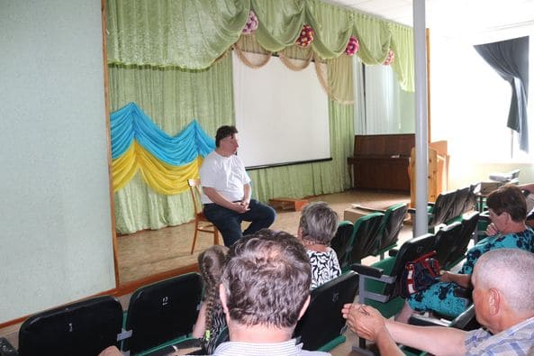
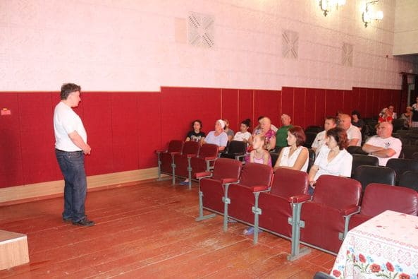
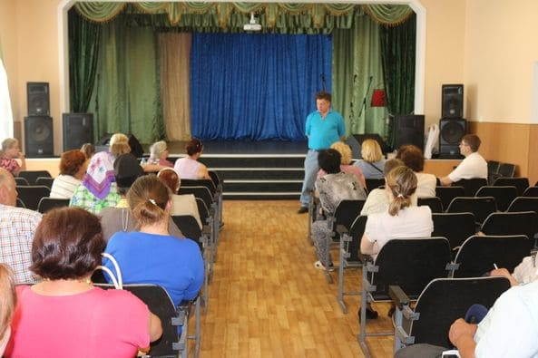
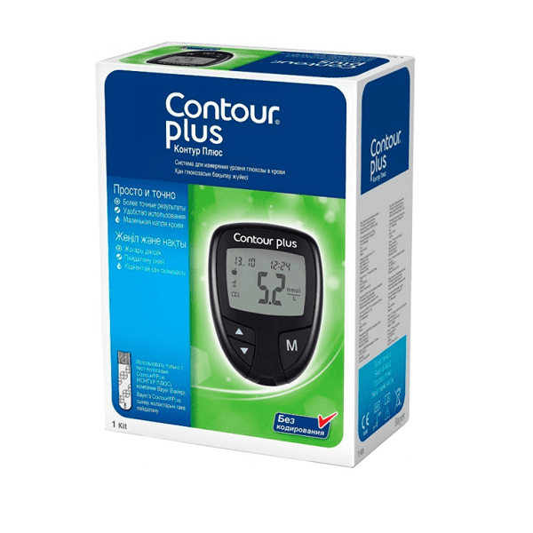
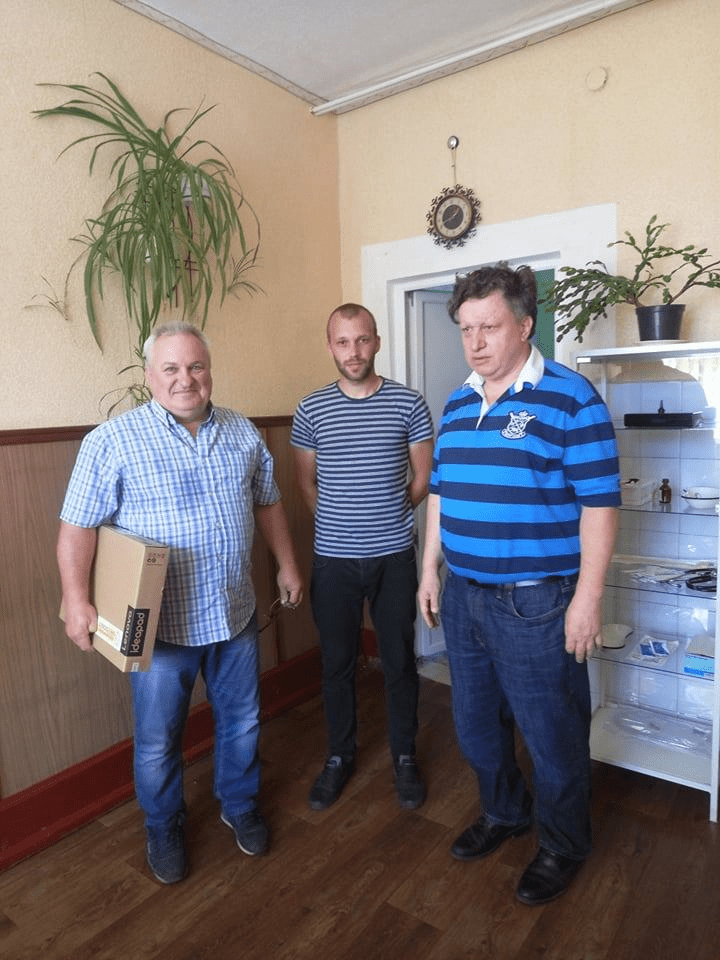
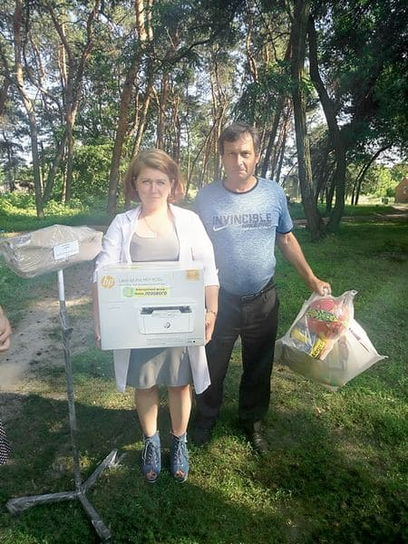
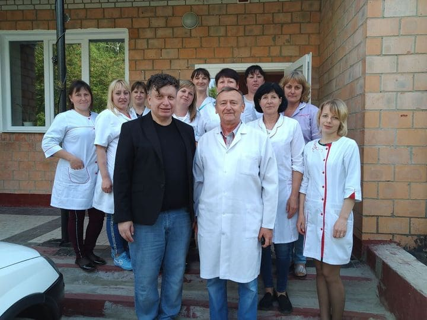
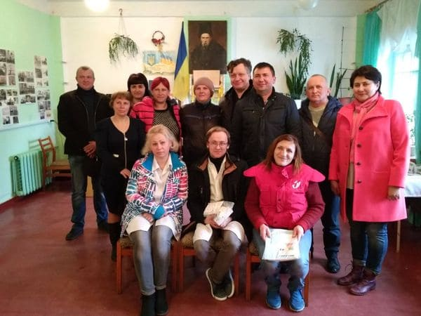
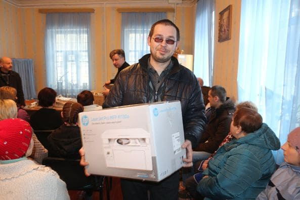

Health Care Facilities:

August 20, 2020 - Epidemiological Department,
Okhtyrka City District Department Laboratory.
Gift from the Lozowy Fund: MFP printer

March 25, 2020 - Medical institutions of the
Sumy region. Gifts from the Lozowy Fund: 2,600
surgical masks and 400 rubber gloves (otherwise
unavailable at the time).

October 16, 2019 - Therapeutic department of the
hospital Velyka Pysarivka. Gift from the Lozowy
Fund: Banner “This building is idle due to
corruption”.

June 15, 2019 - General practice and family
medicine Vorozhba. Gift from the Lozowy Fund:
Tonometer.

June 15, 2019 - Medical and obstetrics Station
of Holubivka. Gift from the Lozowy Fund:
Tonometer.

June 15, 2019 - General practice and family
medicine of Shtepivka. Gift from the Lozowy
Fund: Chainsaw “Calm” for wood heating.

June 15, 2019 - General Practice and Family
Medicine Clinic of Ryabushky. Gifts from the
Lozowy Fund: Еonometer, 5 chairs, electric
stove.

June 15, 2019 - Medical and obstetrics Station
of Kalyuzhne. Gifts from the Lozowy Fund:
tonometer, glucometer.

June 15, 2019 - Medical and obstetrics Station
of Kalyuzhne. Gift from the Lozowy Fund:
Glucometer.

June 6, 2019 - Medical and obstetrics Station of
Kuzemyn. Gift from the Lozowy Fund: Computer
laptop.

June 6, 2019 - Medical and obstetrics Station of
Viazove. Gift from the Lozowy Fund: Bicycle.

June 6, 2019 - Medical and obstetrics Station of
Ivanivka. Gifts from the Lozowy Fund: Tripod and
laser printer.

May 28, 2019 - Medical and obstetrics Station of
Bishkin. Gift from the Lozowy Fund: Tonometer.

May 21, 2019 - Medical and obstetrics Station of
Chupakhivka. Gift from the Lozowy Fund: Printer.

May 21, 2019 - Medical and obstetrics Station of
Vasylivka. Gifts from the Lozowy Fund:
Glucometer, first aid kits.

May 21, 2019 - Ambulance of Mykhailivka. Gifts
from the Lozowy Fund: Glucometer, tonometer and
first aid kits.

May 21, 2019 - Medical and obstetrics Station of
Pidoprigory. Gifts from the Lozowy Fund:
Glucometer and first aid kits.

May 21, 2019 - Medical and obstetrics Station of
Pavlenkove. Gifts from the Lozowy Fund:
Tonometer, glucometer.

May 21, 2019 - Medical and obstetrics Station of
Mezhyrych. Gifts from the Lozowy Fund:
Tonometer, first aid kits.

May 21, 2019 - Medical and obstetrics Station of
Kamianka. Gift from the Lozowy Fund: Paramedics
bag, medical supplies.

May 21, 2019 - Medical and obstetrics Station of
Borovenka. Gift from the Lozowy Fund: Paramedics
bag, medical supplies, first aid kit.

May 17, 2019 - General Practice and Family
Medicine Clinic of Khukhra. Gift from the Lozowy
Fund: Paramedics bag with medical supplies,
first aid kit.

1May 17, 2019 - Hospital of Velyka Pysarivka.
Gifts from the Lozowy Fund: 20 blankets, pillows
and blankets.

May 11, 2019 - General Practice and Family
Medicine Clinic of Boromlya. Gift from the
Lozowy Fund: Computer tablet.

May 11, 2019 - Medical and Obstetrics Station of
Zhyhailivka. Gift from the Lozowy Fund: Computer
tablet.

May 11, 2019 - Medical and Obstetrics Station of
Grebenykivka. Gift from the Lozowy Fund: Moped.

May 11, 2019 - General Practice and Family
Medicine Clinic of Grebenykivka. Gift from the
Lozowy Fund: Computer tablet.

April 19, 2019 - General Practice and Family
Medicine Clinic of Budylka. Gifts from the
Lozowy Fund: 2 swaddling tables.

April 15, 2019 - Medical and Obstetrics Station
of Soniachne. Gifts from the Lozowy Fund:
Portable spirograph, derWeoscope.

March 22, 2019 - Medical and Obstetrics Station
of Vilne. Gift from the Lozowy Fund: Computer
laptop.

March 15, 2019 - Psychoneurological Boarding
School of Lebedyn. Gift from the Lozowy Fund:
Computer printer.

November 15, 2018 - Neurological Department,
Okhtyrka Central District Hospital. Gifts from
the Lozowy Fund: Ventilator, oxygen pillows (2
pcs).